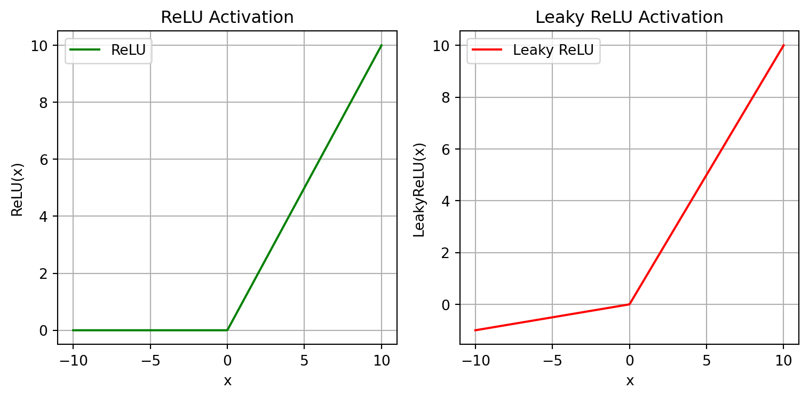

11 Advanced Topics
11.1 Neural Network Basics
The following was written by Ajeeth Vellore, a Mechanical Engineering graduate student at the University of Connecticut.
The goal of this section is give a quick synopsis on neural networks: how they came to be, how they work in basic form, and what a neural network looks like in action.
11.1.1 Introduction
Neural networks are a bio-inspired methodology for learning information from data, introduced as the “perceptron” by Dr. Frank Rosenblatt of Cornell in the late 1950’s.
See, the way that neurologists of the time theorized that the brain intepreted information was by it passing through the eye to the retina, where topographic connections would form some sort of projection layer in the cortical regions of the brain so as to maintain the inital spatial arrangement of the information within the brain after being seen. Then, several layers of processing would occur within the brain so that information could be learned and stored to make associations between patterns that were recognized. Finally, the information might trigger some sort of response via the motor cortex, showing that information has been consumed by the brain and learned from.
So, to mimic this behavior, Dr. Rosenblatt prosposed a computational system of similar architecture, where sensory information of some kind would be projected then learned by some sort of association system, which would result in a numerical response via “response units”. This framework can be seen below in Figure 11.1.
Progress on this work slowed in the 1960’s due to a lack of enthusiasm around the potential for artificial intelligence, a sentiment that continued through the next two decades into the 1990’s, when work on the processing of backpropogation, a fundamental concept to the speedy calculation of weights in a network, was picking up once again via the long short-term memory network in 1995, whose architecture (as shown in Figure 11.2) revolutionized neural networks and became required reference material for further development in this field.
This work mitigated the vanishing gradient problem, where long data sequences could become difficult to learn from as the backpropogation required to learn would result in forgotten information at the end of the process. Thanks to discoveries like these as well as computational advancements throught the last 30 years that allow for greater processing capabilities, neural networks have become commonplace in areas like machine learning. So, what I hope to do through this page is explain what neural networks are and how they work so you can walk away from this with a basic understanding of the concepts so that you, the reader, can easily dive into the deeper world of machine learning.
11.1.2 Basic Building Blocks
Let’s talk some fundamentals for neural networks. There are four main components to address before we get into the math of things:
- Neurons
- Layers
- Weights
- Activation Functions
11.1.2.1 Neurons
These carry some sort of numerical information between 0 and 1 called an actiavtion, represented by the individual colored dots in the image of a sample network in Figure 4. These are the “response units” mentioned in Figure 2, meant to carry some sort of information relating to what they’ve learned. Depending on a threshold, these neurons can be activated so that they are especially highlighted as carrying some information of note.
11.1.2.2 Layers
These are groups of neurons that represent some set of information being learned by a neural network. As a collective, they identify a portion of the input information and respond to it before passing it on to further layers of nodes to “understand” the input in some meaningful way.
11.1.2.3 Weights
The weights are represented by the arrows connecting between layers of nodes in Figure 11.7. These mathematically modify the information in each layer to show what is important to be passed on, usually by multiplying the weight by all of the activations of the nodes it is connected to.
Now, this combination of neurons, layers, and weights can be combined to make predictions and classifications just fine. However, the complexity of the model they form would be quite limited because what those three essentially build is a linear regression model. Since most data is quite non-linear, these sorts of models can fail spectacularly on data slightly more complex than what can be explained by a linear \(y = mx + b\)-type equation. So, we need to resort to using something to incorporate some non-linearity into the model, that being…
11.1.2.4 Activation Functions
I wanted to showcase a couple different functions that are commonly used in neural networks to add some non-linearity, and thus better prediction ability, to a model.
The first two are the sigmoid and hyperbolic tangent functions, as shown in Figure 11.4.
- Sigmoid: \[ \sigma(x)=\frac{1}{1+e^{-x}} \]
- Hyperbolic Tangent (tanh): \[ \tanh(x)=\frac{e^x-e^{-x}}{e^x+e^{-x}} \]
The functions have a similar shape, but the sigmoid function ranges from 0 to 1, which is useful for binary classification tasks, while the hyperbolic function is more generally applicable because it trends extremely positive or negative through the training process and also has an extremely large gradient, allowing for faster optimization.
The second two I want to discuss are the standard Rectified Linear Unit (ReLU) and Leaky ReLU, shown in Figure 11.5.
Rectified Linear Unit (ReLU): \[\operatorname{ReLU}(x)=\max(0,x)\]
Leaky ReLU:
\[\operatorname{LeakyReLU}(x)= \begin{cases} x,& x\geq 0\\[2mm] 0.01x,& x<0 \end{cases}\]

They introduce non-linearity in a slightly different way that can also be useful during the learning process. Both are quite computationally efficient; while the ReLU function induces network sparsity, or a network that has many zero nodes to make it lighter-weight, the Leaky ReLU preserves some of those previously discarded nodes in the case that they are useful for training the model further down the line beyond the training sample that is given at any one time.
Okay, so we’ve gathered all of the individual portions of the neural network system. I’d now like demonstrate how they work in concert with each other.
11.1.3 Calculating Activations
We can calculate activations using an equation that looks like this:
\[ \mathbf{a}^{(n+1)} = \text{func }\!\bigl(\mathbf{W}\,\mathbf{a}^{(n)} + \mathbf{b}\bigr) \]
In this equation, each successive layer is calculated by taking the activations of the previous layer, multiplying them by the weights that connect them to the next layer, perhaps adding a bias term in the case it is necessary and can be tuned during the learning process, and then finally processing the value through any given actiavtion function. Doing this repeatedly is what is essentially done during…
11.1.4 Forward Propogation
…which is used to calculate predictions! Data will flow through a network, activating different nodes in different layers to eventually calculate some function, as might occur in the demonstration shown in Figure 7, with results for every node calculated.

In this sample network, \(a_1\), \(a_2\), and \(a_3\) represent layers of activations (with \(a_3\) being the prediction layer) while \(W_1\) and \(W_2\) represent the weights that connect the aforementioned layers. In this particular scenario, the network is attempting to perform a binary classification. This means that the ground truth will only correspond to one of the outputs, giving it an actual value of 1 for it being true, meaning the other will inevitably result in a 0.
In the example given, it’s obvious that, while the correct prediction is technically made, there is still a great deal of uncertainty in that response, since the activation value is still so close to 0.5. We need to see how far off the model is, so we compare the ground truth to the output predictions, which might come in the form of a sum squared error calculationa form of loss function. This is quite valuable, because it gives us an avenue by which we can calculate how much to change our malleable weights in order to generate more accurate predictions. Through decades of research, it has been found that the best method to update these weights is…
11.1.5 Backpropogation
…where weights are recalculated using a method called gradient descent. This method seeks to minimize loss by updating weights all the way back to the first layer by calculating the effect each value has on the final output using partial derivatives, much like the equation shown below (which uses the variables given in Figure 7):
\[ \frac{\partial a_3}{\partial a_1^{(l)}} = \frac{\partial w_1^{(l)}}{\partial a_1^{(l)}} \cdot \frac{\partial a_2^{(l)}}{\partial w_1^{(l)}} \cdot \frac{\partial w_2^{(l)}}{\partial a_2^{(l)}} \cdot \frac{\partial a_3}{\partial w_2^{(l)}} \]
By repeating this strategy over several epochs (or forward- and backpropogation runs through the dataset), the model can train itself to learn fairly complex information. To demonstrate this capability, let’s look at a dataset very commonly used to test neural networks and their capabilities in prediction.
11.1.6 Neural Network Example with the MNIST Dataset
The MNIST dataset is a modified version of a dataset that comes from the National Institute of Standards and Technology based on images of handwritten numbers between 0-9 that are paired with classifications of each. An example of a number from this dataset can be seen below in Figure 8:

This is a black-and-white square \(28*28\) image, thus comprised of 784 pixels in its entirety. This size is the same across all 70,000 samples in the dataset to maintain uniformity and makes it easy for us to build a simple neural network to predict what class each image belongs to.
From this point forward, due to conflicts between the versions of packages used for the rest of these class notes and the ones needed for this specific chapter, the code will not be executed. Instead, it will purely be shown. This code does work on all 3.12 Python versions, but will require a downgrade of numpy to at least 1.26.4 in order for the tensorflow package to operate.
Okay then! Let’s begin by calling the three packages required for building our neural network:
import tensorflow as tf
import numpy as np
import matplotlib.pyplot as pltThe numpy and matplotlib.pyplot modules are self-explanatory, since they are quite commonly used for manipulating and presenting data in Python. Now, the tensorflow module contains packages that allow for the easy building of a neural network via keras. Conveniently, keras also contains the MNIST dataset in a manner that is easily called, making it very simple to build the full model while splitting the dataset in preparation for the learning process:
# loading MNIST dataset
(x_train, y_train), (x_test, y_test) = tf.keras.datasets.mnist.load_data()
# normalize RGB values
x_train = x_train.astype('float32') / 255.0
x_test = x_test.astype('float32') / 255.0
x_train = x_train.reshape(-1, 28*28)
x_test = x_test.reshape(-1, 28*28)
# using keras for building model
model = tf.keras.models.Sequential([
tf.keras.layers.InputLayer(shape=(28*28,)),
tf.keras.layers.Dense(64, activation='relu'),
tf.keras.layers.Dense(64, activation='relu'),
tf.keras.layers.Dense(10, activation='softmax')
])
model.summary()If the code ran, you would note that the model has one input layer, shaped as 28*28 to represent all 784 pixels indiviually as inputs to the model. Then, there are three Dense layers: the first two are ReLU-actiavted and contain 64 nodes, and the last only contains 10 nodes while being softmax-activated. Admittedly, the choices for number of middle layers and nodes for those middle layers is quite arbitrary in this demonstration, since this decision is dependent entirely on whether or not the system the code is being run on has enough computational power to process more or less nodes and layers. However, the choice of 10 nodes for the final layer is controlled entirely by the predictions we want to make, as there are ten classes that correspond to the ten possible numbers that can appear in the MNIST dataset, and the choice of the softmax function here is to highlight the largest value among the 10 nodes as the final prediction.
model.compile(optimizer='adam',
loss='sparse_categorical_crossentropy',
metrics=['accuracy'])Now we compile the model, setting its optimizer to adam and its loss function to sparse_categorical_crossentropy which calculates based on accuracy. To nutshell the above codeblock, what this essentially does is set the model to be optimized using a highly-effective and memory-efficient gradient-based method using an equation widely accepted to be effective for multi-class classification tasks. Now, we can began the learning process and test on some samples afterwards:
history = model.fit(x_train, y_train,
epochs=5,
batch_size=32,
validation_split=0.1,
verbose=0)
test_loss, test_acc = model.evaluate(x_test, y_test, verbose=0)
print("Test accuracy: {:.2f}%".format(test_acc * 100))
plt.figure(figsize=(8, 5))
plt.plot(history.history['accuracy'], label='Train Accuracy')
plt.plot(history.history['val_accuracy'], label='Validation Accuracy')
plt.title("Training and Validation Accuracy")
plt.xlabel("Epoch")
plt.ylabel("Accuracy")
plt.legend()
plt.show()On a limited amount of epochs (or training runs through the entire dataset), the accuracy on the MNIST dataset would present as quite high if the code ran, showing that a model like this can indeed work to learn information from images to generate predictions.
11.1.6.1 Pros and Cons
So we’ve seen that a neural network can work for learning information, but what are the benefits and drawbacks of using a system like this? In other words, what should you associate neural networks with so that you can decide whether or not to use them in your own data analytics applications? Here are few points that should be considered:
PROS:
Able to identify complex relationships: A lot of data that exists today is quite non-linear in nature. Because of this, it is very important that a learning model be innately capable of capturing that non-linearity to make accurate predictions, which neural networks are thanks to the interchangability of non-linear activation and loss functions.
Learns underlying features from raw data not easily seen by humans: This benefit can be combined with the previous point to emphasize the fact that the reason we humans use models in the first place is because they can visualize patterns that we can’t see with our naked eyes. Neural networks, because of how good they are at understanding all sorts of data, can do an immense job of finding meaning in data that we might find incomprehensible.
Flexible and versatile: Neural networks have been used in thousands of different scenarios to learn and predict thousands of different things. Because of the bio-inspired nature of the perceptron, it is capable of learning lots of information the way humans can, meaning that even if there is a scenario where neural networks have not been tried, there is a high likelihood that they could still be very useful in that scenario.
CONS:
Requires large datasets to learn effectively: Most machine learning models require a significant amount of data to learn sufficiently for accurate predictions. Though it was not explicitly stated above, the MNIST training dataset was 60,000 data samples. This size easily allowed for the model to quickly and efficiently learn well: however, if the dataset you have in front of you is significantly smaller than that, a neural network may not be a good choice.
Computationally intensive: The example given in the demonstration section is hardly a problem for most modern computers to run. However, as the complexity of data increases, necessitating more layers and weights, significantly more powerful hardware is required to identify all of the intricacies of the dataset.
Not interpretable: This may be the biggest drawback to using a neural network for any task. Though we know the equations that go into building a neural network in general, it is incredibly difficult to see how one sample in a dataset has an effect on all of its trainable parameters, and as such, we in the machine learning field typically call neural networks “black boxes”, since the manner by which they learn is opaque to us. This can be undesirable for learning tasks where the model predicts something that would normally warrant a scientific or detailed explanation.
Hopefully, this section on neural networks gives you a good idea of what they are, how they work, and where they might be used. This should hopefully give you enough information to proceed forward and learn about neural networks in more depth for whatever application you want to use them for. Here are some great resources that you can use to learn more about them:
11.2 Develop a python package
This section was prepared by Peiwen Xu, a senior undergraduate student majoring in Mathematics.
11.2.1 Setting up the Project Structure
As mentioned in the previous section, a Python package is a collection of Python modules organized within a directory structure, making code reusable and distributable.
To start packaging your project, you need to create a well-organized directory structure:
project_NAME/
├── LICENSE
├── pyproject.toml
├── README.md
├── src/
│ └── package_NAME/
│ ├── __init__.py
│ └── module_NAME.py
└── tests/project_NAME: Root directory.pyproject.toml: Configuration file containing metadata and build instructions for the package.README.md: A markdown file describing your project.src: Directory to contain your package code, separate from other files.package_NAME: Directory containing all your modules.__init__.py: Indicates that this directory should be treated as a package.
11.2.2 Configuration File: pyproject.toml
The pyproject.toml file defines your package’s metadata and dependencies. Below is a sample configuration:
[build-system]
requires = ["setuptools>=61.0"]
build-backend = "setuptools.build_meta"
[project]
name = "pkg_peiwen"
version = "0.1.4"
authors = [
{ name="Peiwen", email="pwshyu@gmail.com" },
]
description = "This is the description string in the pyproject.toml file"
readme = "README.md"
requires-python = ">=3.7"
classifiers = [
"Programming Language :: Python :: 3",
"License :: OSI Approved :: MIT License",
"Operating System :: OS Independent",
]
[project.urls]
"Homepage" = "https://github.com/peiwen-shyu/pkg"This file contains:
- Package name, version, and description.
- Author details.
- Python version requirement.
- Classifiers for PyPI (e.g., compatible Python versions, license).
- URLs for homepage, documentation, etc.
11.2.3 Testing Locally
Before uploading your package, you should test it locally. Use the following steps:
- Install your package in a virtual environment using:
pip install -e directory_where_toml_is_locatedThe -e flag stands for “editable”, allowing instant reflection of source code changes in the installed package.
- Test your package by importing and running its functions:
import pkg_peiwen
# Code to test your package functionality
print(pkg_peiwen.__version__)
print(pkg_peiwen.__doc__)- Inspect package contents:
import pkgutil
import inspect
for module_info in pkgutil.iter_modules(pkg_peiwen.__path__):
module_name = f"{pkg_peiwen.__name__}.{module_info.name}"
module = __import__(module_name, fromlist=[''])
print(f"Contents of {module_name}:")
members = inspect.getmembers(module)
for name, obj in members:
if not name.startswith('_'):
print(f" - {name}: {obj.__doc__}")11.2.4 Building and Uploading
11.2.4.1 Build
Install the build utility for creating distribution archives:
python3 -m pip install --upgrade buildRun the following command in the root project directory (where pyproject.toml is located):
python3 -m buildThis will generate distribution files in the dist directory.
11.2.4.2 Upload
Install twine for uploading packages to PyPI:
python3 -m pip install --upgrade twineUpload your package to PyPI:
python3 -m twine upload dist/*You will need your PyPI token, which can be generated from your PyPI account settings.
11.2.5 Versioning and Updates
When updating your package, remember to: 1. Update the version field in pyproject.toml and __init__.py. 2. Remove the dist directory for a clean build:
rm -rf dist/*- Rebuild and re-upload your package.
11.2.6 Conclusion
Packaging your Python project not only makes your code portable and reusable but also ensures version control and eases dependency management. Following the above steps, you can create, test, and upload your Python package to PyPI.